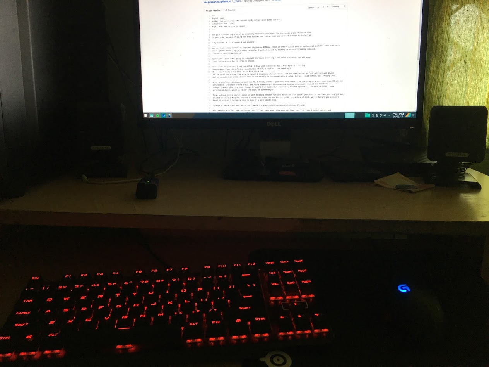

The partition having arch in my secondary hard disk had died. The invisible grime which settles in your mind because of using non free windows and osX at home and work had started to bother me.
And as I got a new mechanical keyboard (Reddragon KUMARA, cheap as cherry MX patents on mechanical switches have died out) and a gaming mouse (Logitech G402) recently, I wanted to use my desktop as main programming machine, instead of my old macbook air.

So to inevitably I was going to reinstall GNU/Linux.Choosing a new linux distro as you all know leads to paralysis due to infinite choice.
Of all the distros that I had installed, I love Arch Linux the most. Arch with its rolling update model, and the infinite repositories of aur, always hit the sweet spot. But I was feeling a bit lazy, as in Arch Linux one has to setup everything from scratch (which I recommend at least once), and for some reason my font settings was always bad in vanilla Arch Setup. I know that is not exactly an insurmountable problem, but as I said before, was feeling lazy.
After a love/hate relationship with mac OS, I really wanted a good GUI experience. I am KDE kind of a guy, and love KDE plasma environment. I shopped around a bit, and found elementaryOS based on new desktop environment called the Pantheon. Thought I would give it a shot, though it wasn’t Arch based. But eventually decided against it, because it didn’t seem very customizable, which is rather the point of elementaryOS.
So my endless distro search, ended up with deciding between variants based on arch linux. Manjaro, Antergos , ApricityOS, I eventually decided to install Manjaro, because I heard that other two are basically GUI installers of Arch, while Manjaro was a distro based on arch with customizations to make it a more smooth ride.

Boy, Manjaro with KDE, had refreshing feel, it felt like what Linux mint was when the first time I installed it. And propriety driver support was out of the box. I would recommend Manjaro as daily development OS, where you want arch, but don’t feel like configuring it perfectly.